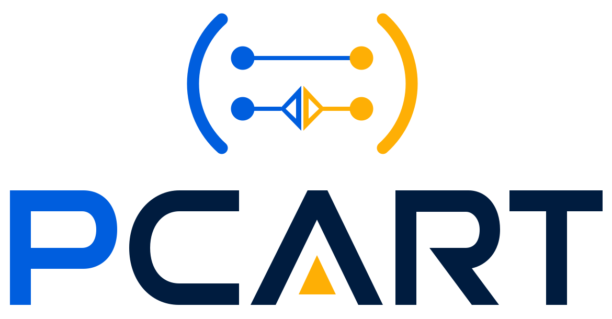

 |
PCART
v1.4
Automated Repair of Python API Parameter Compatibility Issues
|
Extract lib API calls from project source code. More...
Functions | |
| def | getCallFunction (filePath, libName, projPath=None, pcresolveLookup=None) |
| Extract all API calls from a given .py file 每次传进来一个.py文件，抽取所有的调用API. More... | |
| def | getSelfAPI (root, importDict, libName) |
| Extract method calls in a custom class inherited from a lib class 获取从库API继承的自定义类中的库API方法调用 More... | |
| def | modifyFirstName (prefix, callName, paraStr, codeLst) |
| Restore the conventional API call path by modifying the first name of the API prefix 通过修改API赋值调用前缀还原完整的API调用路径 More... | |
| def | modifyWithName (callName, withitemCallName, lineno=None) |
| Restore the conventional API call path in the withitem (including AsyncWith) call form 还原withitemAPI调用的完整API调用路径 More... | |
Extract lib API calls from project source code.
Extracts all target-library API calls from a project source file. Restores conventional API paths by resolving assignment chains, import aliases, and with/async-with context manager aliases. Produces structured CallsiteRecord dictionaries keyed by artifact id. 从项目源文件中提取所有目标库API调用。通过解析赋值链、import别名和with/async-with 上下文管理器别名来还原完整API路径。生成以artifact id为键的结构化CallsiteRecord字典。
| def getCall.getCallFunction | ( | filePath, | |
| libName, | |||
projPath = None, |
|||
pcresolveLookup = None |
|||
| ) |
Extract all API calls from a given .py file 每次传进来一个.py文件，抽取所有的调用API.
| filePath | The .py file path |
| libName | The target lib name (e.g., torch) |
| projPath | The project root path |
| pcresolveLookup | Optional pre-built PCResolve lookup table: {filePath: {callId: CallsiteRecord_dict, ...}, ...}. When provided and filePath is present, returns the pre-computed records directly instead of re-extracting. |
Definition at line 205 of file getCall.py.
| def getCall.getSelfAPI | ( | root, | |
| importDict, | |||
| libName | |||
| ) |
Extract method calls in a custom class inherited from a lib class 获取从库API继承的自定义类中的库API方法调用
| root | The AST node of the parsed project file |
| importDict | Module names identified from import statements |
| libName | The target lib name (e.g., torch) |
Definition at line 27 of file getCall.py.
| def getCall.modifyFirstName | ( | prefix, | |
| callName, | |||
| paraStr, | |||
| codeLst | |||
| ) |
Restore the conventional API call path by modifying the first name of the API prefix 通过修改API赋值调用前缀还原完整的API调用路径
For example: A=polars() A=A.a(x) A=A.b(y) A=A.a(z) A.a(z)-->A.b(y).a(z)-->A.a(x).b(y).a(z)-->polars.a(x).b(y).a(z) 存在的异常情况：中间函数的返回值可能会改变
| prefix | Prefix of the API call (e.g., A.a(z), A is the prefix) |
| callName | API call item in source code |
| paraStr | Parameter string |
| codeLst | Source file code list |
Definition at line 84 of file getCall.py.
| def getCall.modifyWithName | ( | callName, | |
| withitemCallName, | |||
lineno = None |
|||
| ) |
Restore the conventional API call path in the withitem (including AsyncWith) call form 还原withitemAPI调用的完整API调用路径
For example: async with Client("test.mosquitto.org") as client: await client.publish("temperature", payload="25.3") client.publish("temperature", payload="25.3") --> Client("test.mosquitto.org").publish("temperature", payload="25.3")
| callName | API call item in source code |
| withitemCallName | A dict that stores the alias and its counterpart withitem call name |
| lineno | Optional callsite line number used to select the active withitem scope |
Definition at line 157 of file getCall.py.